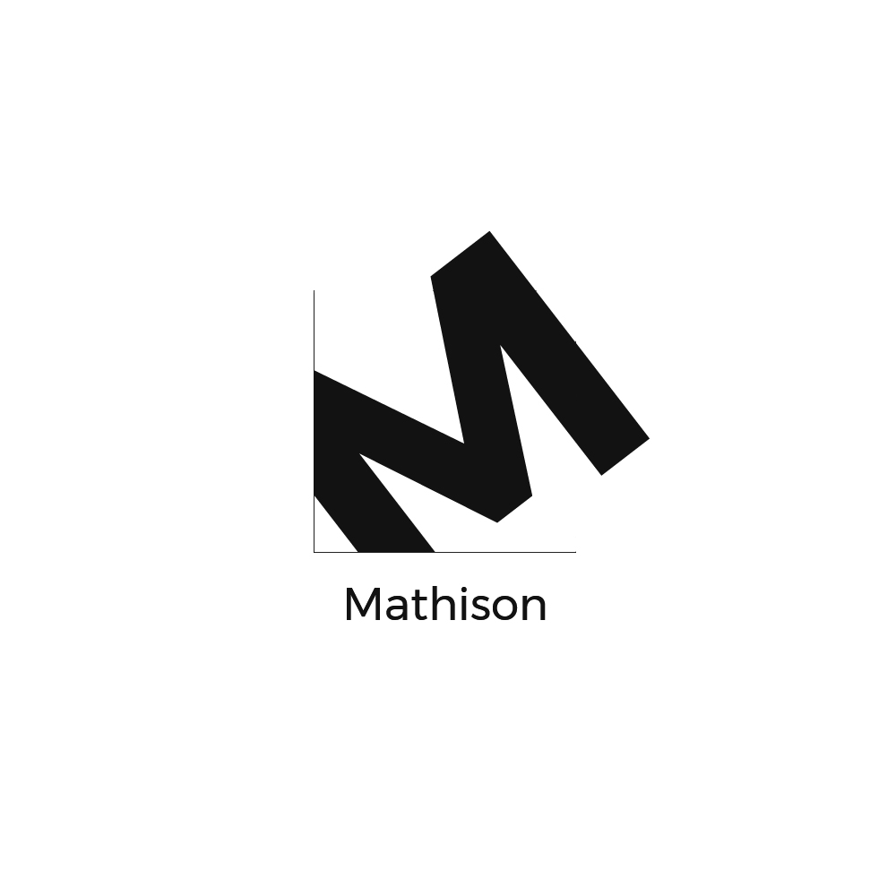

Machine learning software based on research, design and development.
2017
The Project
Mathison – is my dissertation I worked on my last year of university where I researched, designed and developed a tool that uses machine learning to automatically detect and classify blurry images.
To elaborate - let me present you with a scenario
My Role
I've designed and developed the website.
The Problem
Being a professional photographer or just an owner of a digital camera, dealing with blurry and out of focus images is a major problem. Even though digital cameras are known for their fast auto focus, sometimes they can fail to focus on the right
subject or fail to focus at all due to low light and other similar situations.
Professional photographers, for example wedding or event photographers encounter this type of problem on a regular basis. Shooting a wedding or an event for a couple of hours can lead to having a collection of photos that is in the thousands. A
typical workflow will be going through each image and manually removing the unusable ones. This to ensure only the usable photos are ready to be dealt with.
The problem to be addressed here is the use of digital cameras is increasing which means the number of unusable images is too. From my own experience and those around me, making sure the collection of photos taken only contains good images is a
long and exhaustive task. A typical scenario will be going through all the images one by one and filtering out the impractical ones before moving on to editing. To be able to identify a sharp image from one that is not, sharp edges are known to
have a steep change in intensity. With that being said, the gradient magnitude is greater around sharp edges. Using three different methods that extract the magnitude for each pixel, to compare with each other will insure the best solution is
being obtained.
TLDR - We're lazy. If there's a way to do something quicker - we'll do it. Taking thousands of photos is a pain to go through all of them afterwards and selecting the usable ones.
The problem is - you got hundreds of photos from a shoot to go through but don't have the time. How can this problem be solved using AI?
The Solution
The gradient magnitude is large around sharp edges. Operators like Canny edge and Sobel are edge detectors used to get the gradient in the X and Y direction using a 3 by 3 kernel whereas, histograms of oriented gradients uses a 1-D centre mask.
Classifiers like K nearest neighbour, support vector machine and multi-layer perceptron were used to classify 100 unseen images using a training set with a 1000 images divided equally into sharp and out of focus pictures.
TLDR - EDGE DETECTION!
Sharp images have edges. Blurry images - not so much. Using 3 different edge detection methods (Canny Edge, HOG, and Sobel) combined with 3 different Classiers (KNN, SVM and Multi-layer Perceptron) will ensure the best results are being obtained.
Throw in a large labeled dataset of photos (1000) - both blurry and none blurry and let it train.
Testing & Results
It's been tested and shown that canny edge detector with support vector machine gives the best accuracy, 87%, compared to Sobel and histograms of oriented gradients. However, the results also show that, this method is the slowest one compared to
the other ones where it took 517.8 seconds to process 100 images. Sobel provided 1% less accuracy than canny edge but it did so in 226.1 seconds.
Using different features for the training set were also tested. Using the individual pixel magnitudes as features after scaling the image into a smaller size, improved the speed significantly but provided poor results. The best result was HOG with
53% accuracy in 1.8 seconds using KNN algorithm. Sobel provided 50% accuracy in 5.1 seconds and canny edge with 47% accuracy in 11.4 seconds.
TLDR - The best method is the slowest - the worst method is the fastest... hmmm
87% Accuracy when you combine Canny Edge and SVM but also it's really slow. Processes 100 photos in just under 8 minutes.
A Confusion Matrix shows it classifies blurry photos as sharp ones - it's too good - finding edges in blurry photos.
Evalution
To increase the performance of the classifiers adding a few extra steps might help do so. These steps can include scanning the image for the sharpest region and creating a mask around it and only that section of the image should be used for training.
With that being said, the same steps need to be applied on any given image. This extra step might give better results but might increase the performance time.
Identity
So why Mathison?
Name & Logo
Alan Turing.
His middle name is Mathison. He developed the Turing Test (machine's ability to exhibit intelligent behavior equivalent to that of a human) - Basically AI.
Mathison uses AI to distinguish between photos.
Pretty straight forward.

Logo - the M skewed in a way to look similar to a chart.
Website
The website is currently in development.
aimenbenaissa.github.io/mathison/
To release a product & give it exposure a website will be able to do just that.
Specially with a project like Mathison - explanation and information about the product must be available on a platform so users can discover it.
With Software - there's always going to be updates whether they're bug fixes or new features. Having a place where all this live will keep the users in the loop with whats going on. Also - this is a place where users can submit their feedback or
any other related queries.
Status
Mathison is currently still in development.